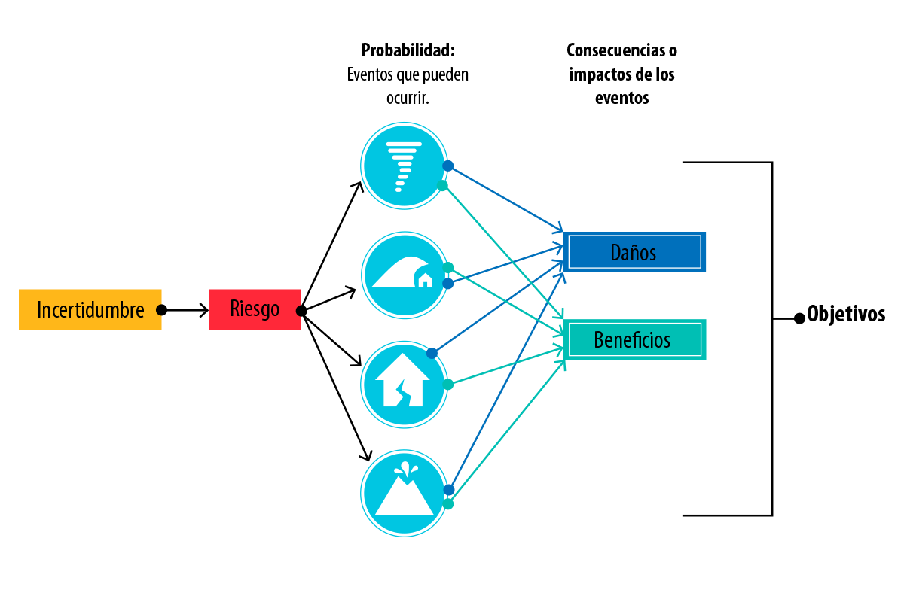

Exploremos técnicas

Ahora le pido que confíe en mí para enseñarle el camino. Comencemos.
CONCEPTO DE RIESGO Y CARACTERÍSTICAS
Para comenzar, realizaremos una nivelación de términos frente a lo que es el riesgo y la gestión del riesgo.
Recordemos que la norma NTC 5254 de 2006 para la Gestión de Riesgo en Colombia, tenía como referente la norma australiana AS 4360, la cual fue modificada con la llegada de la ISO 31000 de 2009. Esta última incluye por lo tanto, las consideraciones de las anteriores normas.
Es muy importante, por lo tanto, tener en cuenta que en todo el vocabulario que se utilizó anteriormente y que correspondía a los términos utilizados en la norma NTC 5254 será reemplazado por el correspondiente a la ISO 31000.
Veamos las siguientes definiciones conforme a la Norma NTC 5254 y la ISO 31000.

Riesgo:
Posibilidad de que suceda algo que tendrá impacto en los objetivos de la organización, y se mide en términos de consecuencias y probabilidades (NTC 5254).
Efecto de la incertidumbre sobre los objetivos (ISO 31000).
En ambas definiciones existen características que es necesario aclarar para entender completamente lo que significa el Riesgo, tales como:
- Posibilidad: se usa como descripción general de la probabilidad o la frecuencia.
- Probabilidad: medida de la oportunidad de ocurrencia de un evento.
- Evento: ocurrencia de un conjunto particular de circunstancias.
- Consecuencia: resultado o impacto de un evento.
- Incertidumbre: falta de seguridad, de confianza o de certeza sobre algo.
Así, el Riesgo se puede definir como la combinación entre la probabilidad de que ocurra un evento y las consecuencias de su ocurrencia.
Riesgo = Probabilidad x Consecuencia
Pero también, el Riesgo tiene mucho que ver con la incertidumbre; ya que no siempre se puede saber que eventos ocurrirán en el futuro, o si estos tendrán un impacto negativo o positivo, es decir, si representan amenazas u oportunidades para el cumplimiento de los objetivos.
Relación entre la incertidumbre el riesgo y su probabilidad y consecuencias.
Por lo tanto, al analizar el riesgo también se deben considerar los Niveles de Incertidumbre, que pueden ser:
- Ignorancia: Cuando no se tiene absolutamente nada de información sobre lo que podría ocurrir en el futuro.
- Incertidumbre: Se sabe que eventos podrían ocurrir en el futuro, pero no cuales realmente ocurrirán. No se conocen todas las variables. La relación entre la acción y las consecuencias, es desconocida.
- Riesgo: Contempla la probabilidad de ocurrencia de un evento futuro. Se conocen las variables. La relación entre la acción y las consecuencias, es probabilística.
- Certidumbre: Cuando se sabe exactamente qué ocurrirá en el futuro. Es decir, se conocen las variables y la relación entre la acción y sus consecuencias es determinística.
En el siguiente diagrama se puede apreciar mejor la diferencia entre los Niveles de Incertidumbre:
Niveles de incertidumbre.
Lo importante entonces en el enfoque dado por la ISO 31000 a la gestión del riesgo, está en el estudio de los riesgos para conocerlos y saber qué puede ocurrir, tratando de visualizar el futuro con herramientas prácticas y técnicas que le permitan a la organización determinar las acciones a seguir.
Ahora, la probabilidad o posibilidad de ocurrencia de un evento puede variar desde un nivel muy alto o Casi cierto, hasta los niveles más bajos, es decir, Raro e Improbable.
Niveles de riesgo, probabilidad y consecuencia.
Y las consecuencias o impactos de la ocurrencia del evento, puede variar entre el nivel Catastrófico y el Insignificante. La combinación de ambos, nos proporcionará Niveles de Riesgo sobre los cuales se pueden implementar acciones para evitarlo, reducirlo, transferirlo o asumirlo; y en esto consiste la gestión del riesgo.